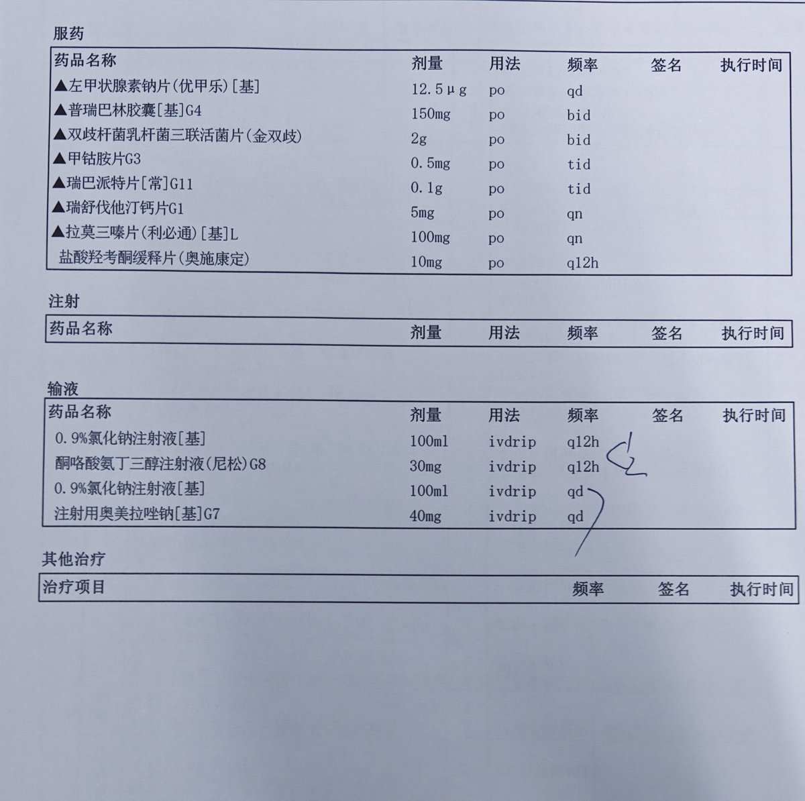

dowond yang
@YangDowond
@WorstCat 啊这你血脂还高啊？这一片吃下去多少可有点受罪了，而且有oxy了在医院里还不能玩oxy
要不然高低鼻吸点（）

坏猫
@WorstCat
中枢抑制剂开的太多了，今天很晕，遵医嘱加了普瑞巴林和度洛西汀(自备)，还有日常医嘱胍法辛(自备)、拉莫三嗪还有奥施康定，一共5种。
现在呼吸抑制感觉憋气有点焦虑，血氧醒着93-95，睡着了80多监护仪就把我吵醒了🥺已经和医生说了明天调整剂量，今晚先吸氧吧>_< https://t.co/jdppAyzsqz